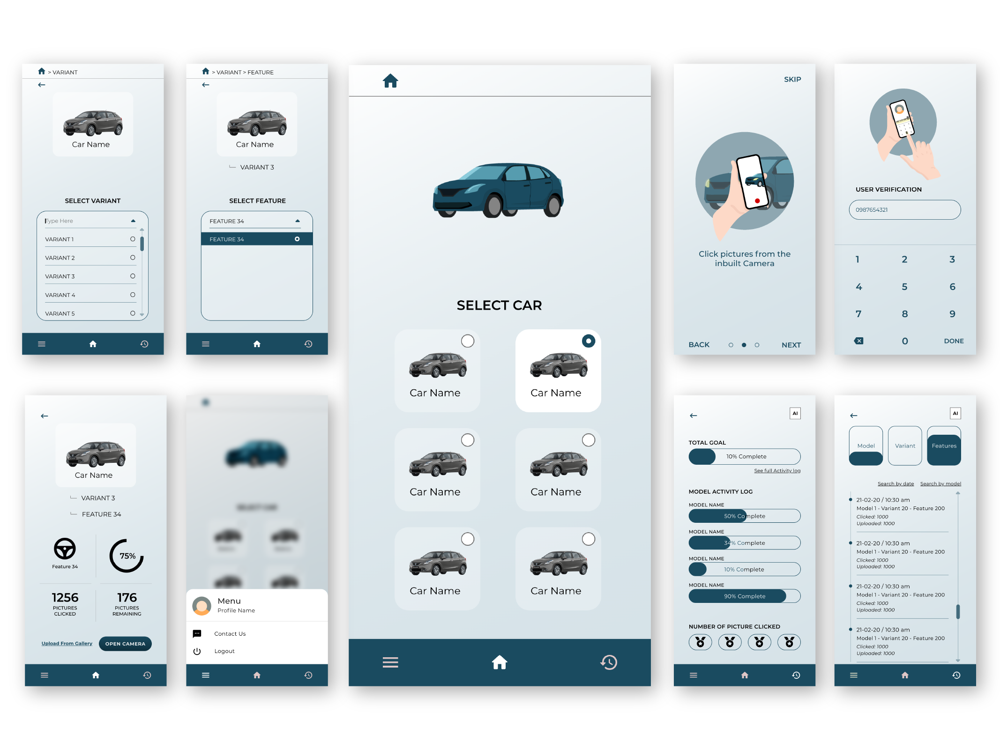
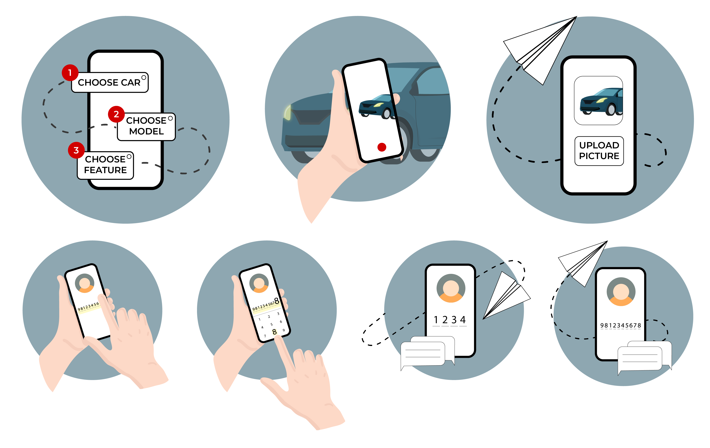

Introduction
TDC is a mass image gathering app for a car manufacturer, developed by my client Xane AI. These images create a database to train an AI1 used in another app, for the same car manufacturer.
The Objective
To help users upload thousands of images of various car models, variants and specific parts in an organised manner.
My Role:
- User Research
- User Flow Mapping
- Creating Wireframes
- Creating the Final Designs
- Creating the Illustrations
The Problem
The car manufacturer required an app that would enable their customers to be able to self diagnose any problems with their car using AI. That app would be able to take a picture, recognise the part, diagnose the problem and show possible solutions to the customer.
To make the above described app, no current AI model or the dataset existed.
The Solution
In order to have a self diagnosing app, the AI (developed by Xane AI) would first have to be trained with thousands of images of every car part according to the car models and various variants.
This is where TDC comes in. TDC would enable the employees of the car manufacturer to click and upload images required to train the AI model.
The Challenge
The major challenge was to develop an app that could be easily used by employees of the car manufacturer across a country as vast and culturally diverse as India. The secondary challenge was to make the method of mapping pictures to various cars (and their parts) easy and error free. The app had to be very easy to navigate through in order to get accurate data to train the AI model.
My Process
The User
The typical user of this product is an employee of the car manufacturer, one that works in a repair/service stations and in the factory.
- Is in the 20s age group
- Not highly educated
- An assembly line employee or a mechanic
- Knows the ins and outs of the vehicles
- Has basic understanding of English
An educated assumption was made that the target user is also familiar with WhatsApp2 and Facebook3 due to their prolific usage amongst smartphone users in India. Thus ensuring that the user has enough understanding of navigating within an app.
The challenge of the app would be to make it easy enough for the user to navigate to get accurate data to train the AI model, as fast as possible.
User flows
The first step was to map out the journey of the user and to keep the number of steps, required to achieve the goal, as low as possible.
I sat with the client to understand the steps that had to be taken to reach the end goal, which essentially was to click and upload pictures of different parts of the car. In order to make the users achieve the goal that was required, we had to make the process linear4 and airtight.
Since TDC is intended only for the selected employees of the car manufacturer, there was no need for a sign-up process. The manufacturer loads the app onto the employee’s work phones as required. Sign in is done via phone number and a SMS based OTP verification.
The journey begins with signing in. Signing in for the very first time shows the user 3 onboarding screens. Every subsequent sign in leads the user directly onto the main screen of the app.
Once signed in, the user selects a car model, then the model variant and then finally selects the feature name after which they can either click pictures from the inbuilt camera or upload pictures clicked earlier.
Wireframes
The high fidelity wireframe was built based on the user flow above. The process and screens were designed in a very simple and linear manner. There is a quick access navigation bar at the bottom with the menu, home and activity log options. There are also simple yet clear breadcrumbs at the top which shows the user, exactly which step/screen they are on.
The menu only needed to have two options, Contact Us and Logout, which is why I decided to make it a bottom overlay menu. On tapping the menu icon, the menu slides out from the bottom, keeping the two options close to the thumb for easier one-handed accessibility.
Illustrations are used in a few places such as in onboarding and sign in to add a visual element which helps in understanding the features of the app. Images have been used in the "Select Model" screen to help users quickly and visually identify the car.
Final Designs
The app was intended only for Android based devices and was designed based on Material Design 2 Guidelines.
The app uses a very simple colour scheme, keeping the focus entirely on the core aspects of the app. The colours used follow WCAG Guidelines maintaining contrast ratios to maintain visual accessibility.
Illustrations
A set of 4 illustrations were created for the "Sign In" screens.
Another set of 3 illustrations were created for onboarding new users. The illustrations created are direct & minimal to communicate the message in a simple manner to the users.
Sources
1: Source
2: Source
3: Source
4: Source